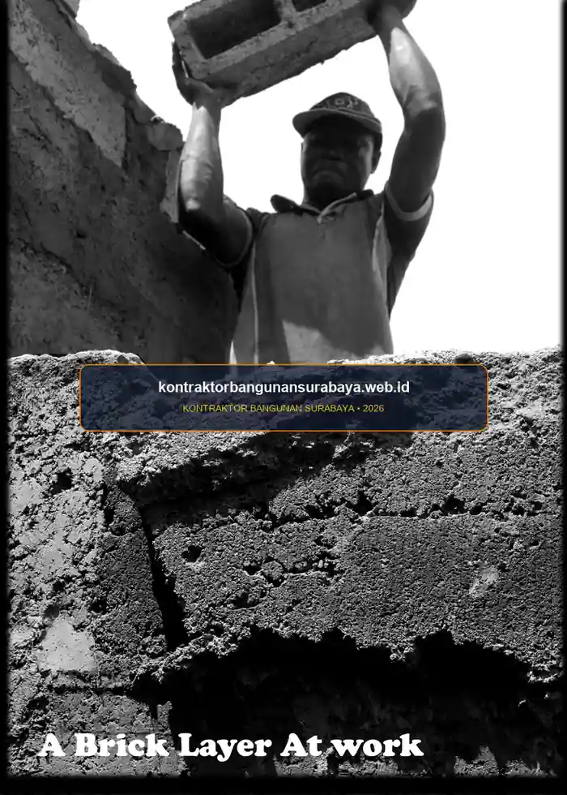

1. Kapan Waktu Terbaik untuk Mulai Membangun Rumah di Surabaya?
Waktu terbaik untuk mulai membangun rumah di Surabaya umumnya adalah menjelang atau selama musim kemarau, karena pekerjaan pondasi, struktur, dan pengecoran lebih optimal dilakukan pada kondisi cuaca kering.
kontraktorbangunansurabaya.web.id membantu pemilik rumah merencanakan jadwal mulai konstruksi yang mempertimbangkan pola musim di Surabaya agar tahapan kritis proyek tidak terlalu banyak terganggu cuaca pada proyek bangun rumah baru maupun renovasi besar.
Karakteristik Iklim Kota Surabaya
Surabaya memiliki iklim tropis dengan musim kemarau yang cenderung panas dan kering (April hingga Oktober) serta musim hujan dengan intensitas curah hujan tinggi yang terkadang disertai angin kencang (November hingga Maret). Memanfaatkan jendela musim kemarau untuk pekerjaan tanah dan struktur adalah kunci efisiensi biaya dan waktu.
2. Dampak Musim Hujan Terhadap Tahapan Konstruksi Kritis
Pekerjaan galian pondasi dan pengecoran struktur pada musim hujan berisiko lebih tinggi mengalami gangguan, mulai dari galian yang tergenang air hingga kualitas curing beton yang kurang optimal apabila hujan turun tidak lama setelah pengecoran dilakukan.
Selain aspek teknis, musim hujan juga dapat memperlambat mobilisasi material ke lokasi proyek, terutama pada lahan yang aksesnya belum diperkeras, sehingga truk pengangkut material berisiko kesulitan masuk ke lokasi pada kondisi tanah yang becek dan berlumpur.
Kelembapan udara yang tinggi selama musim hujan juga dapat memperlambat proses pengeringan material seperti plesteran dan acian, sehingga tahap finishing dinding berisiko membutuhkan waktu lebih lama dibanding pengerjaan pada musim kemarau dengan tingkat kelembapan yang lebih rendah.
| Tahapan Konstruksi | Kondisi di Musim Kemarau | Tantangan di Musim Hujan | Langkah Mitigasi / Solusi |
|---|---|---|---|
| Galian & Pondasi | Tanah stabil, galian kering, proses cepat | Galian tergenang lumpur, risiko longsor bibir tanah | Pompa celup alkon & cerucuk penahan tanah sementara |
| Pengecoran Struktur | Setting beton teratur, akses mixer ready-mix lancar | Air hujan mencairkan semen baru, pasta cor hanyut | Terpal tenda penutup cor & aditif percepat setting |
| Pasangan Dinding & Plester | Plesteran dan acian cepat kering sempurna | Pengeringan dinding lambat, risiko bercak jamur | Sirkulasi udara terbuka & pelapis anti lembap |
| Finishing & Pengecatan | Hasil cat menempel kuat, warna merata | Cat dinding luar menggelembung (*blistering*) | Gunakan moisture meter untuk cek kadar air dinding |
3. Strategi Penjadwalan Tahapan Pekerjaan Sesuai Pola Musim
Strategi umum yang diterapkan adalah menjadwalkan tahapan struktur, yang paling sensitif terhadap cuaca, pada periode kemarau, sementara pekerjaan finishing interior yang dilakukan di dalam ruangan dapat tetap berjalan meski memasuki musim hujan, karena pekerjaan ini relatif tidak terlalu terdampak kondisi cuaca di luar.

Antisipasi Proyek di Musim Hujan
- Tenda & Terpal Pelindung: Menutup area cor dak beton segera setelah proses pemadatan vibrator.
- Sistem Drainase Sementara: Membuat parit sodetan di sekitar lokasi galian agar air limpasan tidak masuk.
- Akses Jalan Proyek: Menggelar sirtu / makadam pada jalur truk material agar tidak ambles.
Manajemen Logistik & Material
- Gudang Semen Terangkat: Menyimpan sak semen di atas palet kayu minimal 15 cm dari lantai.
- Proteksi Besi Tulangan: Melindungi besi baja dari genangan air hujan untuk mencegah karat dini.
- Pengiriman Bertahap: Mengatur ritme kedatangan material pasir dan batu bata sesuai kapasitas tampung.
Apabila proyek terpaksa dimulai menjelang musim hujan, penyediaan terpal pelindung dan perencanaan sistem drainase sementara di sekitar lokasi galian menjadi langkah antisipasi yang penting, agar pekerjaan tetap dapat berjalan dengan risiko gangguan cuaca yang lebih terkendali.
Koordinasi dengan pemasok material juga perlu disesuaikan pada musim hujan, misalnya memastikan area penyimpanan semen dan material yang mudah rusak terkena air memiliki naungan yang memadai, agar kualitas material tetap terjaga sebelum digunakan pada tahap konstruksi.
4. Perencanaan Jadwal Proyek yang Realistis Bersama kontraktorbangunansurabaya.web.id
Perencanaan jadwal proyek yang mempertimbangkan pola musim membantu menghindari keterlambatan yang berulang akibat cuaca, sekaligus memberikan gambaran yang lebih realistis kepada pemilik rumah mengenai estimasi waktu penyelesaian proyek sejak awal.
kontraktorbangunansurabaya.web.id menyusun rencana jadwal konstruksi dengan mempertimbangkan pola cuaca tahunan di Surabaya, sehingga tahapan-tahapan kritis seperti pengecoran struktur dapat diprioritaskan pada periode dengan risiko gangguan cuaca yang lebih rendah sebagaimana dirancang dalam tahap desain arsitektur dan RAB detail.
Penerapan Backward Planning (Jadwal Mundur):
- Tentukan Target Huni: Misal ingin menempati rumah sebelum Hari Raya Idul Fitri (Maret/April).
- Hitung Durasi Konstruksi: Rata-rata rumah tinggal 2 lantai membutuhkan waktu 6 hingga 8 bulan.
- Tentukan Tanggal Mulai (Start Date): Proyek idealnya dimulai pada bulan Juli atau Agustus tahun sebelumnya, sehingga struktur selesai sebelum musim hujan lebat.
- Sediakan Buffer Time: Alokasikan toleransi waktu 2-3 minggu untuk mengantisipasi cuaca ekstrem tak terduga.
Fleksibilitas jadwal tetap perlu disiapkan meski perencanaan sudah matang, karena pola cuaca aktual terkadang berbeda dari perkiraan umum, sehingga komunikasi terbuka antara pemilik rumah dan kontraktor mengenai kemungkinan penyesuaian jadwal tetap penting dijaga sepanjang proyek berlangsung.
Bagi pemilik rumah yang memiliki batas waktu tertentu, misalnya ingin menempati rumah sebelum momen tertentu, penyusunan jadwal mundur (backward planning) dari tanggal target tersebut membantu menentukan kapan sebaiknya proyek dimulai agar seluruh tahapan konstruksi tetap memiliki ruang toleransi terhadap potensi gangguan cuaca.
Perencanaan waktu ini sebaiknya menjadi bagian dari perencanaan proyek secara menyeluruh sejak awal. Baca kembali panduan mengenai jasa bangun rumah baru surabaya serta panduan lengkap bangun rumah baru agar seluruh tahapan pembangunan rumah Anda terjadwal dengan lebih matang.
Kepastian Waktu dan Anggaran
Sinkronisasi antara jadwal kurva-S dan kalender musim di Surabaya melindungi proyek dari pembengkakan biaya tenaga kerja akibat hari kerja basah (hujan) yang tidak produktif.
5. FAQ Seputar Waktu dan Musim Terbaik Bangun Rumah
6. Konsultasi Gratis Sekarang
Ingin berdiskusi lebih lanjut mengenai kebutuhan konstruksi bangunan Anda di Surabaya? Hubungi tim kami melalui WhatsApp di 0889-8964-3555 untuk konsultasi awal tanpa biaya bersama kontraktorbangunansurabaya.web.id.
Konsultasi WhatsApp di 0889-8964-3555Tim Manajemen Proyek Kontraktor Bangunan Surabaya
Divisi Project Management & Estimasi Waktu Konstruksi Rumah Tinggal. Berpengalaman dalam penyusunan kurva-S, manajemen risiko cuaca tropis, dan pengawasan proyek tepat waktu di wilayah Surabaya Raya.